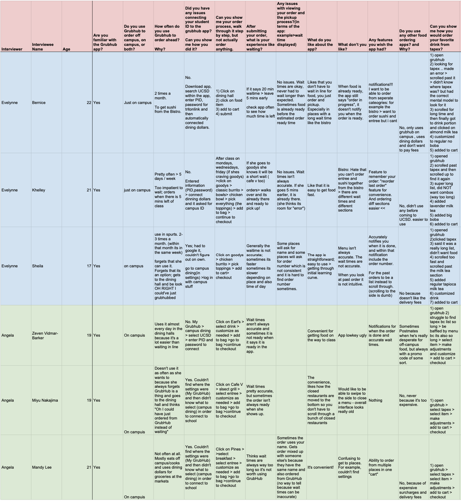

evelynne lee

Overview
Grubhub is an app for food delivery or takeout. This app has integrated a neat service for faster campus dining. As a student at UCSD, I use the Grubhub app quite often to order ahead from campus dining halls to pick up and be able to eat at my apartment. But it is not the easiest feature to find and understand in the first place. I, along with my three other teammates from our DSGN1 class picked the Grubhub app as our product to observe for our project.

Role & Duration
Meet the team!
-
Evelynne : Designer - Came up with interview questions and the methodology behind them, conducted interviews,
produced lo-fi redesigns and justified them
-
Brandon : Analyzer - Conducted interviews and helped compare the product to other comparable products in the market.
-
Angela : Identifier - Conducted interviews and identified and classified the most common errors.
-
Ethan : Analyzer - Conducted interviews and analyzed the errors and thought about tradeoffs associated with them.
Group class project for a span of two weeks
Data Collection
Methodology:
My teammates and I all conducted a set of interviews. We interviewed undergraduate students at UCSD in front of dining halls, common space areas at student dorms and Geisel Library. We also interviewed in front of both eat-in (The Bistro) and regular dining halls (Pines, etc.) to see if problems with the app differed among the different types of service. As we asked our questions we also took videos and/or screen recordings if the interviewees gave us consent. We asked questions to find quantitative data such as frequency of using the app and also open-ended questions asking about their experience with the app. We gave each interviewee the task of walking through how they added their campus ID to the app and also the task of ordering their favorite drink from Tapioca Express. We applied the master-apprentice model here by just observing them as they order without any instruction. This allows us to observe without bias and let the students be the expert while using the app. This is important because it allows us to see step-by-step their process which can vary between different users and we can draw conclusions based off of these observations. Also, to get a fresh perspective on patterns and possible causes behind errors made with the app in on-campus dining, we also talked to a Housing Dining Hospitality(HDH) worker at The Bistro who gave us insight into how the app causes problems for not only customers but the businesses as well. We used almost identical questions for this interview but got answers explaining why certain customers may experience certain problems that cause errors.
Interview Data:
Error Analysis
Identify Errors/Classify Errors:
After interviewing a variety of students who used GrubHub, we identified three main errors that we most commonly observed. The first occurs whenever the user attempts to link their GrubHub to their campus dining/UCSD account. Many people have a tough time finding where the app settings are in order to connect their campus dining. In order to connect to campus dining, the user must navigate to “My GrubHub,” which is located at the bottom of their screen, and then click on the settings icon in the “My GrubHub” screen, then “Campus Dining.” (See Error 1). A lot of users spend a long time trying to find the “Campus Dining” option and open many menus and tabs in order to find it. We identified this as a knowledge-based mistake because the user does not have all the information to know where the settings could be. “My GrubHub” does not signal to the user that it could lead them to the settings menu, much less the “Connect to Campus Dining” feature.
The second error we observed happens when the user attempts to select a restaurant to dine from or a menu item to order. They often scroll past the item or restaurant they were looking for. We identified this as a capture slip, as the user already knows how to order from GrubHub and how to select a restaurant that they wish to dine at, but simply missed it from scrolling too far. Scrolling is an action that we are all too familiar with, and sometimes it just becomes second-nature or instinct to keep scrolling, which is why this error is a capture slip, or when one performs a more frequently performed act instead of doing the desired action. (See Error 2).
The third error we identified occurs in the checkout screen of the GrubHub app. Sometimes users accidentally order with their credit or debit card instead of their campus dining dollars. This is because they accidentally forget to change their payment method when checking out. This is most common for users who actually order off-campus food or from on-campus dining that do not accept dining dollars, like TapEx, Burger King, or Starbucks. We believe that this error is a capture slip because most individuals tap through the checkout screen assuming that all their settings are correct. Most people do not often check whether their payment method is correct because we assume that their debit/credit card is always set as the default, or they only have one payment method registered to their account. Instead of performing the action they wished to, they performed an action they were most accustomed to. (See Error 3).

Error 1 - Connecting Campus Dining
Error 2 - Scrolling Past Items
Error 3 - Wrong Payment
Supporting Evidence:
As stated earlier, the three most common errors were linking Grubhub to campus dining, accidentally scrolling past the dining hall or food item that is desired, using the wrong form of payment method and ordering from off-campus instead of on-campus. The first error, having trouble linking their ID to Grubhub, occurred amongst 7 out of the 12 students that we interviewed. This knowledge-based mistake occurred so often because of how the settings are called “My Grubhub” so people did not realize that it was how they were supposed to connect their ID to the app.
The second error, where people would scroll past their desired item, occurs since they are used to scrolling a lot and just accidentally go past the restaurant or food item that they wanted. Out of the 12 people that were interviewed, this is a common occurrence for 4 of them.
The third error, where they used the wrong form of payment is one that happens to people who also order off-campus. The people mistakenly believe that their payment method is correct and proceed to checkout. As a result, they accidentally use their credit card/debit card to pay for dining hall food instead of using their dining dollars. This has happened to 3 of the people that were interviewed.
Redesign
After conducting our interviews, a common error we noticed is that there is confusion about where students can link their Campus Card into Grubhub to be able to order from on campus dining halls. Currently, in order for a student to add their campus card, they first must click on “My Grubhub” at the bottom, then click on the settings icon at the top right corner, then proceed with linking their card after clicking “Campus Dining”. The campus order ahead is such a big feature but it is in such a hard place to find. This leads to many people making a knowledge-based mistake because they don’t have the correct mental model of where this feature is and make the error of clicking around to other places to try to look for it. In this redesign, to minimize error, we decided to add a campus logo at the top right corner of the landing page so users will not have to look for it so intensely. The logo affords clicking and it being a school logo signifies that it has to do with a college or campus (Figure RD 1.1). The school logo helps bridge the gulf of evaluation utilizing a system image that tells the user “hey click me! You can link your campus card here!”. After the user clicks on the logo, they can proceed with linking their campus card (Figure RD1.2).

RD1.1 - Campus Dining Logo
RD1.2 - Connect Campus Card
Two of our interview questions asked our interviewees to show us how they would order something from the app. Through observation we noticed that some users would accidentally scroll past the dining hall they were looking for or the food item they were trying to order. We can attest to this because we asked the interviewees to say their thought process out loud. For example, one interviewee was saying they were going to order from Pines and just scrolled right past it and scrolled up and down a couple times before finding it and clicking it. These users made a capture slip error. Scrolling is such an autonomous action that it is easy for us to make this error. To reduce this error, our redesign focuses on a horizontal scroll instead of a vertical scroll (Figure to the right). Now the logo and name of the dining hall is big and centered making it hard for users to make an error in scrolling past what they want. The shadow behind each “box” signifies each individual dining hall. Being able to slightly see the next “box” also affords that you can scroll horizontally to view the next dining hall.
From our interviews, some users expressed their frustrations for accidentally paying with their credit card instead of dining dollars because they forgot to change it back after ordering off-campus. This is once again a capture slip made by the users. Sometimes the checkout process can be tedious so users click through it quickly with the assumption that all their settings are correct. To eliminate this error, in our redesign we decided to add an extra step to ask the user for their payment method (Figure to the left). The logos for “credit card” and “campus card” help bridge the gulf of execution by utilizing appropriate system images that help describe what they are. After selecting the payment method, there is one last chance to review the entire order to make sure everything is actually correct. After clicking “place your order” an extra frame is added to help bridge the gulf of evaluation. Getting the green “order placed!” page is feedback to the users that their order has been successfully placed! Green color affords “success”.
Conclusion
Redesign tradeoffs:
The first redesign, to make it easier for students to connect their campus card, has the tradeoff of wasting space or a “crowded” front page for those who don’t use the Grubhub campus feature. By adding the logo there, we had to make a tradeoff between convenience for students and inconvenience for non campus Grubhub users. The second redesign showcases a tradeoff between distinguishability and scroll speed. In the app currently, users scroll vertically and can scroll quickly but also makes them susceptible to capture slip errors. But in our redesign we made each dining hall more distinguishable but the horizontal scroll causes users to navigate slower making this a tradeoff between speed. The third redesign is a tradeoff between tediousness and verification. To make sure users do not perform a capture slip error by confirming their order too fast, an extra step was added to ensure users indicate which payment they would like to use, also making it a more tedious step.
Next Steps:
If I were given more time and resources I would expand my user research to other schools, not just UCSD students. More data means more analysis! This project was fun and I’m glad to have had a great team to share the responsibilities with!